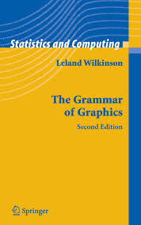
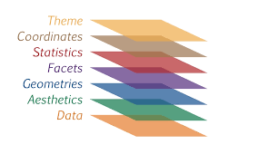
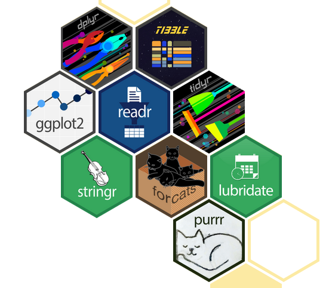

# Traditional thinking
make_pie_chart(data)
make_bar_chart(data)
# Grammar thinking
ggplot(data) +
geom_bar() +
coord_polar() # Bar chart → Pie chart!Design Variables and the Grammar of Graphics
SMM635 - Week 2
Today’s Journey
Part 1: Grammar of Graphics
- Framework & Philosophy
- Core Components
- Building Blocks
Part 2: Visual Forms
- Univariate Charts
- Bivariate Charts
- Multivariate Charts
Learning Objectives
By the end of today’s session, you will:
- Understand the grammar of graphics framework
- Map data to visual variables effectively
- Build complex visualizations from simple components
- Implement layered graphics approaches
- Create appropriate charts for different data types
Part 1: Grammar of Graphics
Moving Beyond Chart Types
How Do We Describe a Chart?
How Do We Describe a Chart?
Traditional Approach:
- Pie chart
- Bar chart
- Line chart
- Scatter plot
Grammar Approach:
- Data
- Aesthetics
- Geometries
- Scales
- Coordinates
What is Grammar of Graphics (GoG)?
“Grammar makes language expressive. A language consisting of words and no grammar expresses only as many ideas as there are words.” - Leland Wilkinson

What’s the Connection between GoG and ggplot2?
- ggplot2 is an implementation of the Grammar of Graphics in R
- Created by Hadley Wickham based on Leland Wilkinson’s framework
- The “gg” in ggplot2 stands for “Grammar of Graphics”
- Allows users to build plots layer by layer using the grammar components
- Instead of choosing from pre-made chart types, you compose visualizations from fundamental building blocks

The Power of GoG
A Bar Chart
library(ggplot2)
# Create data with five categories
data <- data.frame(
category = c("A", "B", "C", "D", "E"),
value = c(23, 45, 31, 52, 38)
)
# Create bar chart
ggplot(data, aes(x = category, y = value)) +
geom_bar(stat = "identity")Pie Chart = Bar Chart + Polar Coordinates
# Create data with five categories
data <- data.frame(
category = c("A", "B", "C", "D", "E"),
value = c(23, 45, 31, 52, 38)
)
# Create bar chart
ggplot(data, aes(x = "", y = value, fill = category)) +
geom_bar(stat = "identity") +
coord_polar(theta = "y", start = 0) +
theme_void()Core Components of the GoG
- DATA: What we want to visualize
- AESTHETICS: How we map data to visual properties
- GEOMETRIES: The visual marks we use
- FACETS: Creating small multiples
- STATISTICS: How to transform or summarize the raw data
- COORDINATES: The space we’re working in
- THEMES: Overall visual appearance
 Source: https://r.qcbs.ca/
1. Data: The Foundation
# Data is structured information
sales_data <- data.frame(
month = c("Jan", "Feb", "Mar", "Apr"),
revenue = c(45000, 52000, 48000, 61000),
region = c("North", "North", "South", "South")
)
2. Aesthetics: Visual Mappings
Mapping Data → Visual Properties
Visual Variables in Action
ggplot(sample_data, aes(
x = date, # Position
y = sales, # Position
color = region, # Color
size = profit # Size
)) +
geom_point()3. Geometries: Visual Marks
ggplot(sample_data, aes(x = date, y = sales)) +
geom_point()Best for: Scatter plots, distributions
ggplot(sample_data, aes(x = date, y = sales)) +
geom_line()Best for: Trends, time series
ggplot(sample_data, aes(x = region, y = sales)) +
geom_bar(stat = "identity")Best for: Comparisons, counts
ggplot(sample_data, aes(x = date, y = sales)) +
geom_area()Best for: Proportions over time
4. Facets: Small Multiples
ggplot(sample_data, aes(x = date, y = sales, color = region)) +
geom_point()ggplot(sample_data, aes(x = date, y = sales)) +
geom_point() +
facet_wrap(~region)ggplot(sample_data, aes(x = date, y = profit)) +
geom_point() +
facet_wrap(~region, scales = "free_y")5. Statistics: Transforming Data
ggplot(sample_data, aes(x = date, y = sales)) +
geom_point()ggplot(sample_data, aes(x = date, y = sales)) +
geom_point() +
geom_smooth(method = "lm")ggplot(sample_data, aes(x = region, y = sales)) +
geom_point() +
stat_summary(fun = mean, geom = "point", color = "red")6. Coordinates: The Canvas
ggplot(sample_data, aes(x = region, y = sales)) +
geom_bar(stat = "identity") +
coord_cartesian()ggplot(sample_data, aes(x = region, y = sales)) +
geom_bar(stat = "identity") +
coord_flip()ggplot(sample_data, aes(x = "", y = sales, fill = region)) +
geom_bar(stat = "identity") +
coord_polar(theta = "y") +
theme_void()7. Themes: Overall Visual Appearance
ggplot(sample_data, aes(x = date, y = sales, color = region)) +
geom_point() +
theme_minimal()ggplot(sample_data, aes(x = date, y = sales, color = region)) +
geom_point() +
theme_bw()ggplot(sample_data, aes(x = date, y = sales, color = region)) +
geom_point() +
theme_classic()ggplot(sample_data, aes(x = date, y = sales, color = region)) +
geom_point() +
theme_minimal() +
theme(panel.grid.major = element_line(color = "gray80"),
panel.grid.minor = element_blank(),
legend.position = "bottom")Building Complex from Simple
Part 1: Foundation
flowchart TD
START((" ")) --> A["DATA"] --> B["AESTHETICS"] --> C["GEOMETRY"]
style START fill:#90EE90,stroke:#333,stroke-width:1px
style A fill:#e1f5ff
style B fill:#e1f5ff
style C fill:#e1f5ff
Part 2: Refinement
flowchart TD
D["FACETS"] --> E["STATISTICS"] --> F["COORDINATES"] --> G["THEME"] --> END((" "))
style D fill:#e1f5ff
style E fill:#e1f5ff
style F fill:#e1f5ff
style G fill:#e1f5ff
style END fill:#FF6B6B,stroke:#333,stroke-width:1px
Example: Layer by Layer
# 1. Data + Aesthetics
ggplot(data, aes(x, y)) +
# 2. Geometry
geom_point() +
# 3. Facets
facet_wrap(~category) +
# 4. Statistics
geom_smooth() +
# 5. Coordinates
coord_cartesian() +
# 6. Theme
theme_minimal()Layering: The Power of Composition
ggplot(economics, aes(date, unemploy)) +
geom_area(alpha = 0.3) + # Layer 1: Area
geom_line(size = 1.2) + # Layer 2: Line
geom_smooth(se = FALSE, col = "red") # Layer 3: TrendPart 2: Visual Forms
From Simple to Complex
Univariate Charts
Exploring Single Variables
Univariate: Continuous Data
ggplot(data, aes(x = value)) +
geom_histogram(bins = 30)Histograms divide data into bins and count observations in each bin.
- Best for: Understanding the distribution shape and identifying patterns
- Shows: Frequency, central tendency, spread, and skewness
- Key parameter: Number of bins affects granularity
ggplot(data, aes(x = value)) +
geom_density(fill = "skyblue", alpha = 0.5)Density plots show a smoothed version of the distribution.
- Best for: Comparing multiple distributions, identifying modes
- Shows: Probability density across the range of values
- Advantage: Smooth curve makes patterns easier to see
ggplot(data, aes(y = value)) +
geom_boxplot()Box plots display the five-number summary: min, Q1, median, Q3, max.
- Best for: Identifying outliers and comparing distributions
- Shows: Central tendency, spread, and asymmetry
- Key insight: Box contains middle 50% of data
Univariate: Categorical Data
ggplot(data, aes(x = category)) +
geom_bar()Bar charts use bar length to encode category counts or values.
- Best for: Comparing categories, showing rankings
- Shows: Frequency or magnitude for each category
- Advantage: Easy to compare values, natural visual ordering
ggplot(data, aes(x = "", fill = category)) +
geom_bar() +
coord_polar("y")Pie charts show parts of a whole as slices of a circle.
- Best for: Showing proportions when there are few categories (2-5)
- Shows: Relative proportions and percentages
- Limitation: Difficult to compare similar-sized slices
ggplot(data, aes(x = value, y = category)) +
geom_point()Cleveland dot plots use position to encode values with minimal ink.
- Best for: Precise value comparisons, when space is limited
- Shows: Exact values for each category
- Advantage: More accurate than bars, less cluttered
Bivariate Charts
Exploring Relationships Between Two Variables
| X Variable | Y Variable | Best Chart Types |
|---|---|---|
| Continuous | Continuous | Scatter plot, Line chart |
| Continuous | Categorical | Box plot, Violin plot |
| Categorical | Categorical | Heatmap, Grouped bars |
| Time | Continuous | Line chart, Area chart |
Bivariate: Continuous × Continuous
ggplot(data, aes(x = height, y = weight)) +
geom_point()Scatter plots display individual data points in 2D space.
- Best for: Exploring relationships, identifying correlations, spotting outliers
- Shows: Direction, strength, and form of relationship between two variables
- Key insight: Patterns reveal linear, non-linear, or no correlation
ggplot(data, aes(x = height, y = weight)) +
geom_point() +
geom_smooth(method = "lm")Scatter plot with trend line adds a fitted model to show the relationship.
- Best for: Confirming correlation patterns, making predictions
- Shows: Overall trend and strength of linear relationship
- Options: Linear (lm), loess (local smoothing), or other methods
ggplot(data, aes(x = height, y = weight)) +
geom_density_2d_filled()2D density plots show concentration of points as contours or filled regions.
- Best for: Large datasets where overplotting obscures patterns
- Shows: Areas of high and low data concentration
- Advantage: Reveals patterns in dense data clouds
Bivariate: Categorical × Continuous
ggplot(data, aes(x = category, y = value)) +
geom_boxplot()Grouped box plots compare distributions across multiple categories.
- Best for: Comparing central tendency and spread across groups
- Shows: Median, quartiles, and outliers for each category
- Advantage: Compact representation of multiple distributions side-by-side
ggplot(data, aes(x = category, y = value)) +
geom_violin()Violin plots combine box plots with kernel density estimation.
- Best for: Revealing distribution shapes and multimodality
- Shows: Full distribution shape for each category
- Advantage: More informative than box plots for complex distributions
ggplot(data, aes(x = category, y = value)) +
geom_jitter(width = 0.2)Strip charts (jittered) show all individual data points.
- Best for: Small to medium datasets, showing actual observations
- Shows: Individual values and sample size per category
- Advantage: Transparency - shows the actual data, not summaries
Multivariate Charts
Beyond Two Dimensions
Strategies for encoding multiple variables:
- Color/Fill: 3rd dimension
- Size: 4th dimension
- Shape: 5th dimension (categorical only)
- Faceting: Create small multiples
- Animation: Time as dimension
Multivariate Example: The Economics Dataset
Multivariate Example: The Economics Dataset
Multivariate Example
Multivariate Example
Best Practices for Multivariate
- Start simple: Add dimensions gradually
- Prioritize: Most important variables get best encodings
- Test perception: Can viewers decode all dimensions?
- Consider alternatives: Sometimes multiple simple charts > one complex chart
- Interactive solutions: Tooltips, filtering, zooming
Putting It All Together
A Practical Workflow
Key Takeaways
📊 The Grammar of Graphics provides a systematic framework for creating any visualization
🔧 Complex visualizations are built from simple, reusable components
🎨 Visual variables (position, size, color, etc.) are tools for encoding information
📈 Choose chart types based on data types and relationships
🔄 Iteration and layering lead to rich, informative graphics
Next Week
Topic 3: Exploratory Data Analysis
- EDA workflow and visualization
- Distribution visualization techniques
- Correlation and relationship exploration
- Time series exploration
- Case Study: Nomis Solutions
Homework
- Practice creating layered visualizations
- Experiment with different coordinate systems
- Read: Wickham’s “Layered Grammar of Graphics”
Questions?
Let’s explore the grammar together!
🌐 Course website: https://simonesantoni.github.io/data-viz-smm635
💬 Office hours: Wednesdays 3-5 PM